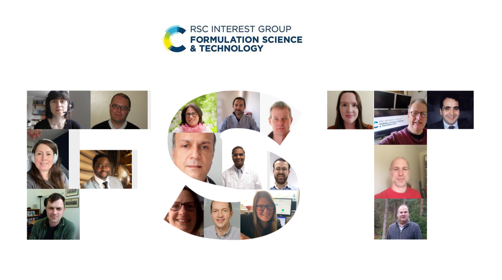

NEWS LIST
go back
2024 - EUSA Teaching Award Nomination
2023 - Postdoc Appreciation Week
2023 - Group photo from IWNMNNF at Loch Lomond
2022 - Group photo from Granular GRC at Stonehill College
2022 - Leverhulme Research Project Grant funded
2022 - Fellow of the Higher Education Academy
2022 - EUSA Teaching Award Nomination
2021 - Piping videos
2021 - Stockbridge Pipe Band photos
2021 - Edinburgh Diwali Parade
2021 - Practicing with Stockbridge Pipe Band during lockdown
2021 - Royal Society RAMP Award
2021 - RSC Inspirational Committee Award
2021 - EUSA Teaching Award Nomination
2021 - RSC Event: Formative Formulation 2
2020 - Article about new PRL paper
2020 - Announcement about seminar in Edinburgh
2020 - Announcement about Phil Trans A Theme Issue on Stokes (Part 2)
2020 - Articles about new Nature Communications paper: phys.org; engineersonline.nl
2020 - Announcement about Phil Trans A Theme Issue on Stokes (Part 1)
2020 - Articles about new Science Advances paper: Science News; Cornell Chronicle; Medium
2020 - RSC Event: Formulation 4.1
2019 - Article on Cambridge Chemical Engineering site
2019 - Announcement about new RAEng Research Fellows
2019 - Group photo from Soft Matter GRC at Colby-Sawyer College
2019 - Stokes 200 Symposium
2019 - Article about Stokes in "Martlet", illustrated by Martin Rowson
2019 - Formative Formulation
2017 - Talking about my research
2016 - Group photo from Granular GRC at Stonehill College
2016 - My PhD thesis
2016 - Article about new PNAS paper
2016 - Announcement about rejoining CEB Cambridge
2016 - Announcement of my election to Pembroke College Fellowship
2016 - European Federation of Chemical Engineering Award
2016 - European Federation of Chemical Engineering Award (another article)
2015 - Article about new PRL paper
2015 - A short non-refereed review article
2014/2015 - My hill running profile
2013 - Prize at particle technology conference
2011 - Masters project presentation slides
2011 - Masters project group page
2007-2013 - My cubing profile
2007 - LSPB Newsletter


